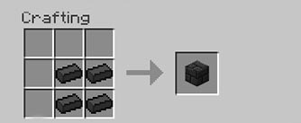
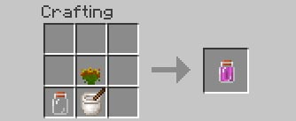

Health
Health does not work exactly the same as in Vanilla Minecraft.
First, you will start with a max health of 6 hearts (12 life points) instead of 10 as usual. Your max health will increase by half a heart for each level you get (See the skills and leveling section for further information).
Notice the "Injured" status on the top left corner of the screenshot above. When injured, you have the "Mining fatigue" and the "Slowness" effect as seen in the bottom right corner of the screenshot. If you take even more damages, "Injured" will become "Dying" and you will have the "Weakness" status too.
Recovering health is difficult, since the regeneration is extremly slow and only occurs when you have at least 16 hunger points (8 hunger marks). You can also use your "Rest" skill. The less health you have, the slower you are and your field of view will start reducing.
Hunger

The first thing to keep in mind is that your hunger is one of your worst enemies. It won't drop too quickly the first day because of your high level of saturation, so take advantage of that and try not to exhaust yourself too much (By avoiding jumping, swimming : especially actions that display the little lightnings marks).
Notice the "Starving" status on the top right corner of the screenshot. Before this, you should be "Hungry". When you are really starving, you won't even be able to jump ! So be careful, moreover if your hunger bar becomes empty, it kills you instantly.
Finding food is vital. In the beginning, the most reliable sources of food are the wild crops and fruits. They're easy to find in some biomes, but are totally lacking in other ones so, explore to find a rich, pristine land full of resources.
There are a lot of food sources you can find in the wild. You will have to learn how to recognize them, so try out every plant you see, you could be surprised !
As you may noticed, food gives way less hunger points than before. That is why you will soon have to cook yourself some delicious meals in order to get more saturation and replenish your hunger bar entirely with only one food item. If you want to start slowly regenerating health, your hunger must have at least 8 icons left.
Thirst


In the lower left corner of your screen you can see your thirst meter.
You can drink from any source of water by right clicking with an EMPTY hand on the immerged side of a solid block, as seen on the screenshot.
Be careful, there are 4 types of water :
- Normal water which basically don't do anything special besides hydrating you of course.
- Salt water which dehydrates you. (Found in ocean biomes.)
- Dirty water which has a chance giving you hunger, and sometimes poisoning you. (Found in swamps, caves, or sometimes when the color of the water is green. Bottle it an smelt it in a furnace to clean it.)
- And the cold water which will significantly decrease your body temperature. (Can be crafted with a water bottle and a snowball, and it's found in cold biomes.)
Watch out ! When you eat something, the more it replenishes your hunger bar, the longer it dehydrates you. So keep in mind that you can't eat anytime, anywhere, but you have to take your time and have a source of drinkable water nearby. You can also drink/carry water with glass bottles or even craft a camel pack like so :
Temperature

The number beside the temperature bar represents your BODY temperature. You can also see black markers which indicate the AMBIENT temperature.
Your body temperature will evolve depending on the ambient temperature and if you have a good level of hydration, your body will attempt to protect you from dangerous temperatures, but you will dehydrate 2 times faster.
If your body temperature reaches a lower number than 35°C you will enter an hypothermia state.
If your body reaches a higher temperature than 38°C, you will start sweating. In the screenshot, you can see that i'm sweating in this desert : there are little blue squares around my character.
And if it goes further than 39°C you will be heat stroke.
Both hypothermia and heat stroke can lead to various handicaps and then, death, while sweating will make you dehydrated faster. So make yourself a fur armor set before building your igloo in the cold countries but take it off if you are near some lava or in a desert.
Exhaustion


Exhaustion is added by the smartmoving mod. Click this link to see the new possibilities it offers, like grabbing, sliding, climbing and way more.
This bar only appears when you do exhaustive actions like a simple jump. It displays just above your hunger bar.
On the screenshot above, you can see me climbing up a rope i just thrown to get out of a ravine. It uses exhaustion quickly, but you can sneak anytime to rest a bit and recover your points. Otherwise you will fall.
For each lightning you consume, your hunger will be strongly affected. So save your energy if you don't have a lot of food left.
Notice that if your exhaustion bar is empty, you can't even jump any more. Fortunately, it replenishes fully within like 3 to 5 seconds if you're not starving.
Oxygen


The oxygen bar is displayed in the lower right corner of your screen. It has no link or influence on the little bubbles which are used under water as an indicator.
Be careful when you start going deeper and deeper. Oxygen will be rare at a certain point, and your bar will start decreasing. Your screen will become greenish and blurry as you're suffocating (See screenshot).
For information : there is no oxygen in the nether. So, in order to stay in such a place, you have a few solutions. You can dig a one block large pit straight to the surface, it works but it's quite long since the blocks are longer to break. But you can also use leaves. They are a good source of oxygen, even if you'll need a lot of them. Growing a tree is the fastest solution, if it is possible.
Skills and leveling

Skills can be helpful, and add a bit of RPG in Minecraft. I created them for fun and there is still a lot of work to do with them. Take it more as a funny feature than as a real, definitive part of the gameplay.
The classic level bar you have over your hotbar is not related to this, it does not show your real level. It is used only for enchanting. To see your real level and any other information like your skill points see the commands list below.
You begin as a simple survivor, who has a maximum health of 6 hearts, and you get an extra half-heart each time you level up. You start with 4 skill points to spend and earn 2 more at each level. Spend them wisely, you can't recover a spend skill point.
Everybody can freely take the skill named "Rest". It roots you for 15 seconds, which means you can't move during this period. Once this time passed, you will have Speed I for a short period and you will start healing.
Then, there are 4 main traits : Agility (feather), Fight (diamond sword), Heal (heal potion) and Knowledge (book), that you can see on the screenshot, on the same line as the bed. Every other skill can only be learned if you have the required amount of point in the corresponding trait. Each trait is related to 4 or 5 skills which can be maxed out to 5 each.
On the screenshot, you can see 5 feathers which are the 5 agility skills and 5 swords for the fight skills. Then, there are 5 healing skills represented by potions and strings. There should be only potions, but when there is a string, it means that you need to have a string in your hand to cast this skill. It is the same then for the 4 Knowledge skills, where one of them requires you to hold a torch.
At level 8 you can choose between 3 classes : Mage, Hunter or Master. This will give you 2 new traits depending on your class. The Mage has Pyro and Mentalism, and a max health of 18 life points. The Hunter has Traps, Archery, and 20 life points. And the Master has Weapons, Movement (Ninja moves) and 22 life points. The maximum level you can reach is level 15 for the moment.
Commands list (Type in the chat):
- /class info : Displays all your skills informations like your level, your experience, your remaining skill points etc.
- /class skills : Displays your skill tree. This is where you spend your skill points and learn new skills by clicking on it.
- /class options : This command tells you the available class names you can profess.
- /class profess [class name] : At level 8, do this command to choose your class.
Wood

Of course, don't even try to chop down a tree with your hands, this won't work. So, to find your first source of wood, you have to break some leaf blocks, which will eventually drop you some twigs. You can also find twigs on the ground in certain biomes, as seen on the screenshot, which is really faster to gather.
Twigs can be turned into sticks and 2 sticks will give you a plank. Be careful, some leaves won't drop any twig (If you have the shaders installed, you can recognize them because they are not waving).
Also notice that a plank, surrounded by sticks in your crafting table, will give you 8 carpenter's blocks which is really worth it :

Once you have an axe, you'll see that if you try chopping down a tree it falls entirely into logs. The time it takes depends on the size of the tree above your axe. It can be really (really) long. So don't try chopping a giant tree with a wooden axe. You can still take only one log by sneaking while chopping if you want to be faster.
Stone tools
In the basic crafting table, you can only make wooden tools. This does not apply for the hoes, the vanilla swords and the non-vanilla weapons made with the crafting table (like the warhammer, the katana...).
In order to make stone tools, you need to use the Tconstruct mechanics. You will need 3 tables, made by placing a "blank pattern" over a plank, a log or a crafting table. Here is a little tutorial on how to make your first stone pickaxe. (The head of the pickaxe has to be made of stone, but the rest can be made of any material.)
How to make your first stone pickaxe
 |
The first thing you need to know, is how to make a blank pattern. You need 2 sticks and 2 planks. You will need at least 6 patterns. |
|
Place a blank pattern over a plank, you will get a "Stencil table". It is used to shape your blank patterns (see below). |
|
With a log, it will give you the "Part builder". It is used to craft tool parts using your shaped patterns. |
 |
With a crafting table, it will give you the "Tool station". It is used to craft finite tools using your tool parts. |
|
Go into your "Stencil table" and place a blank pattern in it. Then just click the "Next pattern" button until you find the following components : A pickaxe head, a tool binding and a tool rod. You just shaped your first patterns ! |
 |
Go to your "Part builder" take one of your shaped patterns and place it in. Then, place any material in the builder too, only the pickaxe head has to be made of stone. Do the same with your two other shaped patterns. You should end up with 3 different pickaxe parts. |
 |
Finally, you just have to go to your "Tool station" and be sure to select the pickaxe in the menu on the left. Place your 3 components, and take your brand new stone pickaxe. |
|
Optionally, you can make a "Pattern chest" too. Place it just beside the "Stencil table" as you can see its content while opening the stencil table. This chest can only contain shaped patterns. |
You only need to make a pattern once and you will never have to do it again. Keep in mind that tools made this way don't disappear when broken ! Just place your broken tool in the "Tool station" and place the same material you used for making the head of the tool to repair it.
Check out the Tinker's construct wiki to learn more and discover all the materials you can use to make tools, like paper, cactus...
Campfires
If you don't want to spend your night in the darkness you will need some fire. But don't bother making a pickaxe and finding coal to make torches. Now you can build a campfire out of 5 sticks, a piece of flint, and a stone-made campfire base :


Obviously you will still need a pickaxe to gather the 4 cobblestone blocks that are necessary to build the campfire base, but you can do this at the end of the day in your hidey hole. Moreover, you can search the gravel for flint : you only need 4 gravel blocks and then, place it in your crafting table in a 2 by 2 square. I greatly recommend the decorative campfire to spend a well-lit first night.
If you really want you can still try to get coal during the first day, but i think it's not worth it, as coal is really long to gather (Although coal is the only way to cook meat without a furnace). By the way, you can cook meat with your torches, even if it is kind of a waste.
The decorative campfire is the farthest one on the screenshot on top of the article. This is a "decorative" campfire because it's only used to provide some light and warm up during the cold nights, but as it is not using coal, it is a bit weak and you can't cook anything with it.
You need a more advanced one : the 3 other campfires on the screenshot. By the way, once placed, the only way to remove it is with a pocket knife. The main pro of this campfire, is that you can put dye in it, in order to have various effects... Try it out !
You can cook your food with the campfires, but it requires at least 19 iron nuggets (2 ingots and 1 nugget). The first thing you will need is the campfire base. It is the same used to craft the decorative campfire. But instead of using it in a crafting recipe, you just have to place it on the floor.
Once placed, a kit is required to cook your meats. First, you have to make an empty kit like so :

Then you have to put some specific items in your kit to make it usable. Right click with an empty kit in your hand to open it. There are 3 kinds of kits you can make, from the most basic to the most advanced :
- The spit kit : Put 1 iron stick and 2 wooden sticks in an empty kit to make a spit kit. It can cook two items at once, but only chicken. (The farthest one on the screenshot after the decorative campfire.)
- The grill kit : Put iron bars, 2 iron sticks and 4 wooden sticks. It can cook 4 items at a time.
- The pan kit : Put a pan, a string, 2 sticks and an iron stick. It can cook 8 items at a time.
Now, just right click the campfire base and place the kit inside, you just made your first barbecue (requires coal).
Cooking
As you may have noticed, most of the food items we used to eat are not really worth it. A porkshop, even cooked, won't give you more than 2 hunger points (1 food mark) and almost all the berries give you only 1 hunger point back (half a food mark). In order not to end up with any food shortage, you will soon have to start cooking.
Some food items like the burgers, the pizzas or the footlong sandwich, can restore almost all your hunger. If you want to learn how to cook these delicious meals, one of the best solution is to refer to the Crafting guide. However, there is a huge amount of food types, this is why i will give you some tips to start learning.
Here are the 3 main kitchen utensils you'll need :
| Mixing bowl : |
|
| Iron pot : |
|
| Cutting board : |
|
I recommend crafting the mixing bowl, the iron pot and the cutting board as soon as possible. There is a good reason for this, they allow you to make two basic recipes which are really useful :
| Fruit salad : |
 |
Knowing that a fruit gives you 1 hunger point (half a mark), and that a fruit salad gives you 3, using 2 fruits, you can deduce that you win a point doing this. So it's not that much, but it's worth it. You can add the cutting board into the recipe, or you can put your cutting board down (Like on the screenshot on top of the article), right click it and make the recipe in it. (Works with any fruit.) |
| Stock : |
|
The stocks give you 3 times the amount of food you started with. You really should make this in the beginning. You can even improve them adding some ingredients. (Works with any vegetable.) |
And here are the rest of the kitchen ustensils, which can be really useful later on :
| Mortar and pestle : |
|
| Skillet (not overwritting the katana any more) : |
|
| Saucepan : |
 |
| Bakeware : |
|
| Juicer : |
 |
Breeding
Breeding animals is not so different than in Vanilla Minecraft. But remember always putting torches ! Otherwise your farm animals will despawn.
Also, even if they are quite rare, be careful the tornadoes which could take them away forever. To know how to breed each type of animal, i recommend reading the Mo'Creatures wiki
Farming


There are a lot of crops available and learning which ones are useful could take some time. You should also check out the Harvestcraft wiki if you need some more information.
To till the soil, some water has to be nearby, at the same level you're trying to use your hoe. Always right click your crops to harvest once mature. Even in the wild, you should always try to right click a berry bush or a fruit before trying to break it. You can plant almost any crop on a tiled dirt block, without needing a seed even if placing an item in your crafting table will often give you the corresponding seed.
Here is the recipe to make a fruit tree sapling. It works with any fruit, but you have to use a different sapling type depending on the fruit :


If you feel lost among all the seeds dropped by the grass, remember some seeds which are really useful, like the soybean, which can replace eggs in every recipe by making firm tofu. Tomatoes and lettuce are used in a lot of recipes. And With a garlic and an eggplant, you can make stuffed eggplants which are really worth it and cheap.
Fishing


Fishing with the wooden fishing rod is still the same, although there are new fishing rods thanks to Aquaculture. The iron fishing rod is disabled because it was really cheaty, but you can still make a gold or diamond one.
Gold and diamond fishing rods recipes
 |
 |
Usually you can make fish fillets out of the new fishes you get, but it is a little bit different in GSP : fish fillets are disabled.
Most of the time, you just need to put two times the same type of fish in the crafting table. It will give you one or more regular fishes. (That can replace Fish fillets in all the cooking recipes !)
Raw fish crafting example
|
If you put this fish in your crafting table, you won't be able to take the fish fillets out of it, as they are disabled. |
 |
This is why you need to put two of them to get one classic raw fish. |
 |
But there are some exceptions. The Bluegill for example, will give you a raw fish with only one of it. It displays a fish fillet, but when you click on it, it will turn into a regular raw fish. |
The type of fish you catch depends on the biome you're fishing in. Oceans are where you can catch the biggest ones which give you more raw fish.
You can also kill the fishes you see in the water with a sword or a spear for example.
Getting iron/Furnace

This is one of the most important changes you have to be aware of. The classic furnace crafting recipe is disabled. There is a new way to craft it, which requires cobblestone, a decoration campfire and iron plates :

"But how do i get iron ingots without a furnace ?" you ask. This is simple, when you break an Iron ore block with a stone pickaxe or a Tconstruct pickaxe, it has a chance to break into 3-6 iron nuggets (See screenshot). With 9 iron nuggets you can make an iron ingot. So you will have to put your iron ore block on the ground and break it multiple times until it finally breaks into nuggets.
By the way, with that amount of zombies at night, they have greater chances of dropping iron ingots when killed.
Since the blocks are 10 times harder to break, you surely want to have powerful tools as soon as possible. Unfortunately, you are only allowed to craft wooden tools in the crafting table and stone tools with the Tconstruct tables. In order to make more advanced tools, you will have to build a real multi-block smeltery, powered by lava.
How to make a multi-block smeltery
|
The first thing you need to know, is how to make some "Grout". It is made of 1 gravel, 1 sand and 1 clay ball. |
|
Smelting some grout will provide you a seared brick, which is the basic component of all the smeltery. You will need at least 84 seared bricks to build it. |
|  |
Placing 4 seared bricks in a 2x2 square will craft a seared brick block, used to build the actual smeltery structure. |
| Once you have some seared brick blocks, you can start building the smeltery. First you need to make a 3x3 square of seared brick blocks (Which are usually placed in the ground). This is the smeltery base. |
|
| Then, you have to build up the walls, made with seared brick blocks too. The base is not totally surrounded, two blocks are left empty, because we will need to place a smeltery controller and a seared tank. |
 |
|
This is how to craft the seared tank. It is used to hold the lava that powers your smeltery. Fill it with by right clicking with a lava bucket. |
|
And here is the recipe of the smeltery controller. Right clicking on it allows you to place the blocks and items you want to smelt. |
| Now, place the two previous blocks down, where you have left an empty space. If you did it correctly, the smeltery controller should be lit up. |
 |
 |
This is the "Drain block" crafting recipe. The drain allows you to pour your molten metals out of the smeltery... |
|
...but is useless without a faucet placed right on its front side. |
| And this is how it could look like. Place the drain and its faucet on any wall you want. |
|
|
One last thing : The casting table. It would be bad if the molten metal would spread all over the floor. It has to be placed right under the drain and its faucet. |
| Just fill up the seared tank with a lava bucket, an here we go ! The smeltery is ready to be used. You can put seared glass instead of the seared brick blocks. It's allowed too, and you can see through without looking into the smeltery controller. |
|
| Now, let's make a tool part. Let's say a pickaxe head for instance. You have to craft an aluminum brass pattern. Aluminum brass is an alloy, and the only material used to make patterns. Of course a wooden one would just be burned down to ashes. First of all, to do this, just right click the casting table with the stone pickaxe head, to place it down. |
 |
| Now, place 1 copper ore and 3 aluminum ores in your smeltery controller. This is the ratio needed to make the alloy we need : aluminum brass. Once it is smelted, just right click the faucet ! |
|
Now you have an aluminum brass pattern, you can place it back into the casting table, and pour any metal into it to make the pickaxe head of your dreams. It works exactly the same with any tool part.
If you want to know more information about this, you should go to the Tconstruct wiki.
Same here, the tools made this way does not disappear when broken. You have to repair them in your tool station.
Monsters

The main enemies in the game are the zombies. There is a huge amount of them spawning at night, but some others are even more dangerous, as they can break the blocks or are really strong and fast.
Zombies : The zombies are very numerous, they have a slight chance of dropping bones, they are smarter than before, see how they're attracted by the light on the screenshot. They also hear the noises, smell your blood trails, climb the ladders...
Creepers : They are the same but have a slight chance of dropping a charged creeper when killed. So be careful !
Skeletons : They are really rare in GSP. But they can have special abilities like rapid fire, poisonous arrows and more.
Mo'creature monsters : I didn't want that much different and incoherent monsters this is why most of them are disabled. Those remaining in the overworld are mostly the Ogres, the Golems, the Wraithes, the Scorpions, the Werewolves and some really rare Silver skeletons. Go to the Mo'Creatures wiki if you want to learn more about them.
The first day

Here your adventure begins. You just arrived in a brand new world full of new dangers and mysteries. There are a lot of things that changes since Vanilla minecraft (understand "normal" minecraft).
Noticeable gameplay changes in the beginning :
- All the blocks are 10 times harder to break. So don't get stuck into a hole without the right tool !
- If you die, you lose everything you have on you ! However, if you're carrying a backpack in the backpack slot (Sneak key+B to access) it will drop on the floor so you can get it back. You will drop a zombie too, so watch out your friends.
- You begin with only 6 hearts, but you will increase by leveling up. The standard experience bar for enchanting is not related to your real level. Type "/class info" in the chat to know your level and skill points.
- You can't carry more than 7 items with you and they have a certain weight, so be careful what you take with you, or you will be slowed down.
- You won't be able to craft a furnace or metal/stone tools the regular way.
(Furnace craft | Metal smeltery | Disabled recipes)
- You will certainly want to know how to craft all things possible. You can make a crafting guide like so :

Let's begin ! First of all, you should type "/class skills" in the chat and take the free "Rest" skill. It can be useful is you take some damages, which will surely happen. Don't waste time spending your skill points, you will have all the night to do this.
The most important thing, as usual, is to find some wood. If you're lucky, some twigs are covering the ground which is fast to gather, but if not, you can start breaking leaves (These which are moving if you're using the shaders).
I like to gather 31 twigs exactly. It is a bit long but this amount allows you to craft the following things :
- If you don't want to bother finding coal which is long to gather, and compels you to put down your crafting table to make a pickaxe, you can use the decorative campfire. It requires a campfire base made of 4 cobblestone. This is why you will still need a pickaxe but you can make it in the end of the day, in your shelter. And as a plank is made with two sticks, you will need 8 sticks for the pickaxe. Then the campfire itself requires 5 more. So you need 13 sticks for the campfire.
- Then i like to use the carpenter blocks to build/improve your first shelter quickly without wasting time digging It is really reliable, because with one plank surrounded by 8 sticks (=10 sticks), you will get 8 carpenter blocks. 3 more than the 5 planks you would have made out of 10 sticks.
- And you also obviously need 8 more sticks to make a crafting table.
- So we have : 13 sticks for the campfire/pickaxe, 10 for the carpenter blocks (optional), and 8 for the crafting table, for a total of 31 sticks (Or 21 if you don't feel like using the carpenter blocks).
Okay ! Now that you have the right amount of sticks, if you want your campfire to work, you will need a piece of flint. You just have to find 4 gravels and place it in a 2 by 2 square in your crafting table.
While you're exploring, try to harvest all the berry bushes and fruits you find on the way (Always try right clicking first), because killing animals without a sword is not worth it in my opinion.
The environment can kill you quickly if you're not experimented. Be careful the poisonous plants there is 5 different types you will have to learn to recognize. The "Poison Ivy" is the most dangerous since it is totally green and often not-seen. You can craft poison from each of them by the way. Watch out the wild animals too, a lot of them are not as friendly as you think they are.
While exploring, try to do the actions that make the exhaustion bar appear, as less as possible. Even swimming makes your hunger drop faster. Don't eat anywhere, anytime, because you'll be dehydrated for a certain period. And always be careful your thirst and temperature, it can surprise you and kill you before you even understood what was happening.
If you managed to find your sticks, 4 gravels, a bit of food and if it is still (kinda) daytime, the first night shouldn't be too much of a problem. Of course, try to have a clean water source nearby you can reach tomorrow in the morning.
New/disabled recipes

The disabled recipes in GSP
|
|
The classic bread recipe was too easy and not roleplay. This is why you have to craft some dough and put it in a furnace. |
 |
Biome o plenty sunflower seeds were really cheaty. This is why you can't craft them any more, but there is another way to get sunflower seeds in the new recipes section below. |
|
The classic furnace recipe is disabled in order to make its obtention more difficult. See the new furnace recipe in the section below. |
 |
The bamboo is spawning in huge amount when you find some. It is really fast to break, and getting wood wasn't challenging enough. You can make regular sticks though, see in the section below. |
|
As the upgraded fishing rods catch fishes really quickly, fish fillets are disabled. You have to put fishes together to make regular raw fish. See the fishing section. |
 |
The camping mod backpack is disabled, because it can carry way too much stuff and is not configurable. |
|
Envelopes are disabled, because it allows you to carry 2 times the amount of items you usually can. |
 |
Same for the packages. But 6 times... |
The recipes you can only find in GSP !
|
|
By putting two of these tall sunflowers together, you can obtain harvescraft seeds, which are more fitted to the modpack. |
 |
This is how you get wood out of bamboos. Maybe 4 for a single stick can seem a lot but the bamboos are still the fastest way to get wood. |
 |
This is how you can make planks out of some sticks. |
|
Search for flint into the gravel ! |
|
Gather that ivy you can find on the ground. You can now make strings out of it ! |
|
You can make a leather flask to carry some water. What ? It's made of glass ? No, no it's made of leather. |
  |
Turn some fur into leather. |
|
Who said that crafting leads requires slime balls ? Now leather can replace it. |
|
Canvas is usually made out of hemp. But here's another way to craft it. |
 |
Fishbowls were overwritten by the glass jar recipe. Now it is fixed. |
 |
Turn your furnace into a slab furnace the same way you do it for the crafting tables. Because the normal recipe would make the new normal furnace recipe useless. |
 |
Mo'creatures furs and camping mod furs are now compatible ! You just need white or brown dye. |
|
The katana recipe was overwritten by the skillet. It is still the case, but the trick is to craft it upside down. |
 |
You can make poison jars (From Biomes o plenty) out of all the poisonous plants in the wild (From the plant mega pack), using a mortar and pestle (From harvestcraft).
Isn't that awesome ? 3 different mods working together.
Also notice that the poison Ivy doesn't require the mortar and pestle.
|
 |
And now you just have to put your arrows in the jar to make them poisonous. Just put from 4 to 8 arrows around a poison extract jar. |
|
And here, Balkon's weapons mod works with the plant mega pack. You can craft the darts as usual, but using any of the previous poisonous plants. |
|
You can now cook almost any meat thanks to your torches. You need twice as much coal as when using a furnace, so don't waste it too much with this. It can still be useful sometimes. |
|
This is how you craft a furnace in GSP. See the Getting iron/Furnace section to learn more. |
Known issues/bugs
Here are the main issues and bugs that you can encounter in game. For all the other problems and the solutions, please read the F.A.Q.
Server crashes. Yes it happens sometimes, but just restarting the server works and you shouldn't have any world corruption or others crashes soon.
Some axes are not added to TreeCapitator and chop only one log at a time. (Will be fixed)
Some leaves do not drop sticks. This is not really an issue, let's say that the twigs and logs from certain types of trees are not good for making things out of.
Aquatic animal spawns are a bit weird.
Ocean worlds are still happening
You can pick up more than 7 items if you already have a full stack of the same type of item you're trying to pick up.
Some underground chests are really full of harvestcraft items.
The back pack render is glitched, but others can't see it.
If your character looks dismembered, try to restart Minecraft completely.
If you can see through the floor when there is leaves on it, it is because of optifine. Just set the trees to "Fancy" in the "Details" section. Or just get rid of Optifine.
When you die, the following things will happen : In the beginning you only have 6 hearts but after a death, you will respawn with all your hearts. Most of them will be empty and, of course, you will not be able to regen entirely. You will not be slowed down when low health and other players will see you flying and glitchy. To solve all this, you just have to disconnect and reconnect.
When you go from the mud into the water, your speed stays reduced until you touch a normal floor.
The moon is going through its phases in an infinite loop.
When you have certain status effects like hypothermia, the Smartmoving and the Status HUD icons are not displayed.
In creative mode, if you place blocks while flying, they can disappear. Just get to the ground before placing.


{kind=link}
{kind=link}
{kind=link}
{kind=link}
{kind=link}
{kind=link}
{kind=link}
{kind=link}
{kind=link}
{kind=link}
{kind=link}